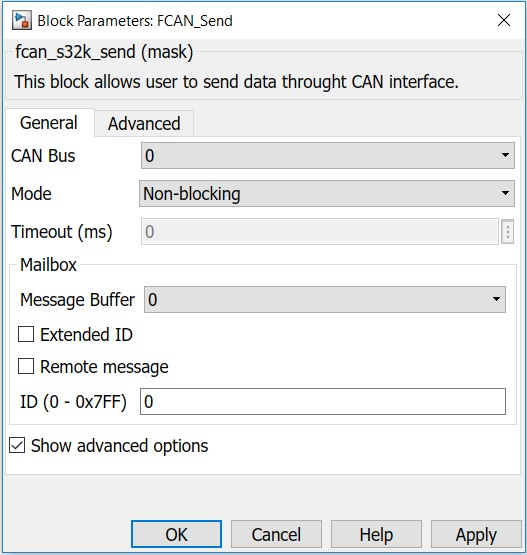
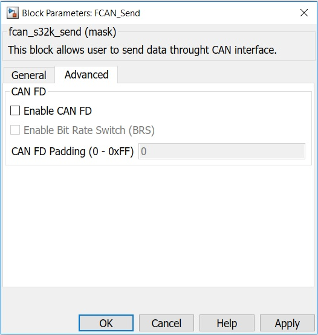

FCAN Send Block
This block allows the user to send data through FlexCAN interface.
Block Image

Inputs:
- Data (uint8(*))
- Length (uint8)
Outputs:
For Blocking mode:- Status (status_t)
- None
Parameters and Dialog Box
The block dialog consists of the following tabs:
General
CAN Bus
Selects the CAN Bus.
Mode
Select the receive operation mode:
- Blocking - use polling mode
- Non-blocking - use interrupt mode
Timeout
Defines the timeout value in ms for the blocking send.
Message Buffer
Configures the Message Buffer used for send operation.
Extended ID
Selects whether the sent CAN message has extended or standard ID.
Remote message
Selects whether the sent CAN message is a remote frame or not.
ID
Configures the ID of the message to be sent.
Show advanced options
Shows or hides the advanced options.
Advanced
Enable CAN FD
When checked the CAN message is sent using CAN-FD protocol.
Enable Bit Rate Switch (BRS)
When checked Bit Rate Switch is used.
CAN FD Padding
Sets the padding of the CAN message sent using CAN-FD protocol.
Block Dependency
Block Miscellaneous Details
- Refer to FCAN Configuration Block to get information about pin assignment.